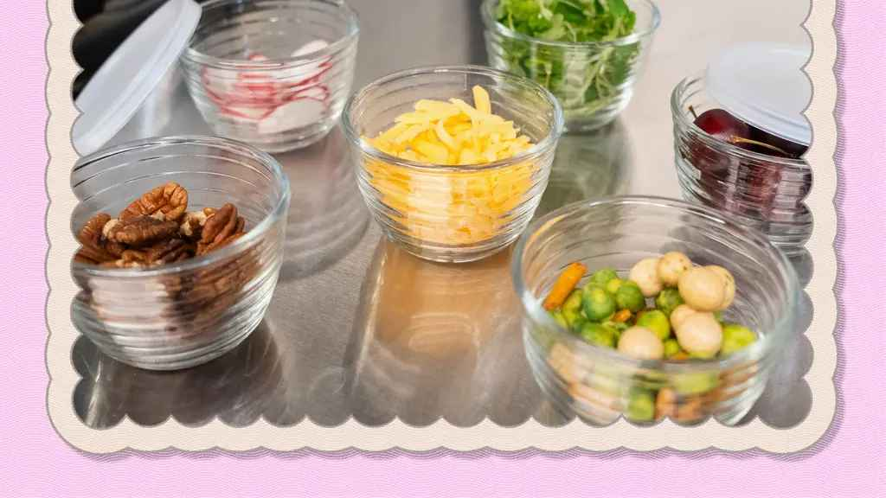

I've made almost every scaling mistake you can imagine. Collapsed cakes, salty soups, flat cookies, bread that wouldn't rise, bread that rose too much, brownies that were raw in the middle and burnt on the edges, casseroles that overflowed onto the oven floor and set off the smoke alarm. My family has eaten a lot of failures over the years. But I kept notes, and now I have a list of the most common mistakes so you can skip straight to the success part.
Here are the twenty mistakes I see most often, in no particular order, with the fixes that actually work.
Mistake one is scaling leavening linearly. This is the big one. Baking soda, baking powder, and yeast do not multiply the way flour does. Use exponent 0.75 for chemical leavening, 0.85 for yeast. I've said this before but I'll keep saying it because people keep messing it up. Your 4x recipe does not need 4x the baking soda. It needs about 2.8x. That's the difference between a beautiful cake and a soapy mess.
Mistake two is scaling salt and spices the same as flour. Same problem, different exponent. Salt and intense spices use 0.85. A 3x recipe gets 2.5x the salt, not 3x. Your taste buds will thank you.
Mistake three is forgetting to check pan capacity. You double a cake recipe but use the same size pan. The batter overflows, drips onto the oven floor, burns, fills your kitchen with smoke. The fix is to calculate the volume of your original pan, multiply by your scaling factor, then find a pan or combination of pans that can hold that volume without going past two-thirds full.
Mistake four is using the wrong pan shape. A 9-inch round pan and an 8-inch square pan have about the same area, so that swap works. But a 9x13 pan has almost double the area. Your batter will be half as thick. If you don't adjust the recipe or the pan, your bake will be done much faster and might burn.
Mistake five is ignoring oven capacity. Your oven can only hold so many baking sheets at once. If you scale a cookie recipe from 12 to 48, you'll have four sheets. Most home ovens fit two. You need to bake in batches. Plan your timing before you start mixing.
Mistake six is not adjusting baking time for batch size. A larger batch in the same pan takes longer. A deeper pan takes much longer. A wider pan takes less time. Use visual cues, not just timers. A toothpick should come out clean. A cake should spring back when touched. Bread should sound hollow when tapped.
Mistake seven is scaling eggs fractionally. Your recipe calls for 3 eggs. You scale to 2.5x and need 7.5 eggs. You can't use half an egg. Round up to 8 eggs or weigh your eggs. One large egg is about 50 grams. Weigh out 375 grams of beaten egg. Don't just ignore the half egg or your ratios will be off.
Mistake eight is forgetting to adjust for altitude. At high altitude, leavening acts faster and liquids evaporate quicker. You need less baking soda and more liquid. The exponents still work, but your baseline changes. If you live above 3,000 feet, look up high altitude adjustments for your specific elevation.
Mistake nine is not testing a small batch first. You want to make a 10x recipe for a party. You've never made the original recipe. You multiply everything, including the mistakes. Make the original first. Make sure it works. Then scale. This seems obvious but people skip it all the time.
Mistake ten is ignoring ingredient density differences. A cup of flour can be 120 grams or 150 grams depending on how you measure. A cup of brown sugar can be 170 grams or 220 grams. If you scale by volume instead of weight, your scaling factor is meaningless. Convert everything to grams before you multiply.
Mistake eleven is not accounting for different measuring methods. The recipe author might have spooned and leveled the flour. You might dip and sweep. That's a 25% difference. When you scale that error by 4x, you're off by 100%. Use the same method or better yet, use weight.
Mistake twelve is scaling water without considering the flour's absorption. Whole wheat flour needs more water than white flour. Rye needs even more. If you substitute flours and scale the water linearly, your dough might be too dry or too wet. Adjust hydration based on the flour type.
Mistake thirteen is forgetting that fat affects texture. A brioche with 40% butter feels wetter than a lean dough with the same hydration. When you scale an enriched dough, you might need to reduce water slightly to compensate for the softness from the fat.
Mistake fourteen is scaling flavor extracts linearly when they're intense. Peppermint extract, almond extract, anise extract. These can overpower a scaled recipe. Use exponent 0.85 like spices. For vanilla, linear is fine because vanilla is milder.
Mistake fifteen is not labeling your scaled ingredients. You measure out 2,000 grams of flour, 1,200 grams of sugar, 800 grams of butter. Then you forget which is which. Use tape and a marker. Label everything. Future you will be grateful.
Mistake sixteen is mixing up tablespoons and teaspoons. At 1x, this mistake is annoying. At 10x, it's catastrophic. 10 teaspoons of salt instead of 10 tablespoons is a 66% reduction, but if you go the other way, 10 tablespoons instead of 10 teaspoons is 3x too much. Write the units clearly.
Mistake seventeen is scaling a recipe that wasn't written correctly. Some online recipes are just bad. The ratios are off. The instructions are wrong. Scaling a bad recipe makes a larger bad recipe. Find reliable sources or test before scaling.
Mistake eighteen is forgetting that dough temperature matters at scale. A large batch of dough holds heat longer than a small batch. That means faster fermentation, which means you might need less yeast or a shorter proofing time. Monitor the dough temperature with a probe thermometer.
Mistake nineteen is scaling a gluten-free recipe like a regular one. Gluten-free flours absorb more liquid. Xanthan gum doesn't scale linearly. You need to adjust for these differences. Use exponent 0.7 for xanthan gum and add 10-15% extra liquid.
Mistake twenty is not taking notes. You scale a recipe. It works perfectly. Two months later, you want to make it again. You can't remember the scaling factor you used, or the pan size, or the baking time. Write it down. Keep a notebook. I have three notebooks full of scaling records. They're my most valuable kitchen tool.
Now let me expand on a few of these because they deserve extra attention.
The leavening mistake is the most common. I once watched a friend make a 4x batch of pancakes using 4x the baking powder. The pancakes puffed up like balloons and then deflated into rubbery discs. She was so frustrated. I showed her the math. 4^0.75 is about 2.8. She used 2.8x the baking powder on her next batch. Perfect pancakes.
The salt mistake is almost as common. People think salt is just for taste, so a little extra won't hurt. But a little extra at 1x becomes a lot extra at 4x. I had a student who made a quadruple batch of soup with linear salt. She said it tasted like seawater. She had to dilute it with twice as much broth to make it edible. That's expensive.
The pan mistake happens to everyone at least once. You're making a double batch of brownies. You only have one 8x8 pan. You pour all the batter in. It rises above the rim, then spills over. The smoke alarm goes off. Your family runs into the kitchen thinking there's a fire. The fix is to use two pans or buy a bigger pan.
The note-taking mistake is the one I want to emphasize the most. I have a notebook that I started maybe six years ago. It's just a cheap spiral notebook, the kind you get at the drugstore for 99 cents. On each page, I write the date, the recipe name, the original yield, the scaled yield, the scaling factor, the actual amounts I used, the pan size, the oven temperature, and the baking time. Then I write notes about how it turned out. "Good crumb, slightly too salty, reduce salt by 10% next time." That notebook has saved me from repeating my own mistakes over and over.
When I scale a recipe now, I look back at my notes from the last time I made it. If I made a note that the dough was too dry, I add a little more water. If I noted that the cookies spread too much, I reduce the butter or chill the dough longer. That's how you improve.
I built a tool that helps with the math for these mistakes.
I've made every mistake on this list at least once. Some of them I've made multiple times. But each time I learned something. The notebook is proof of that.
You don't have to be perfect. You just have to be willing to learn from your failures.
— Olivia
P.S. The pancake friend I mentioned? She now uses the calculator and has not made a bad pancake in over a year. She texted me last week: "I finally trust the math." That's all I ever wanted to hear.